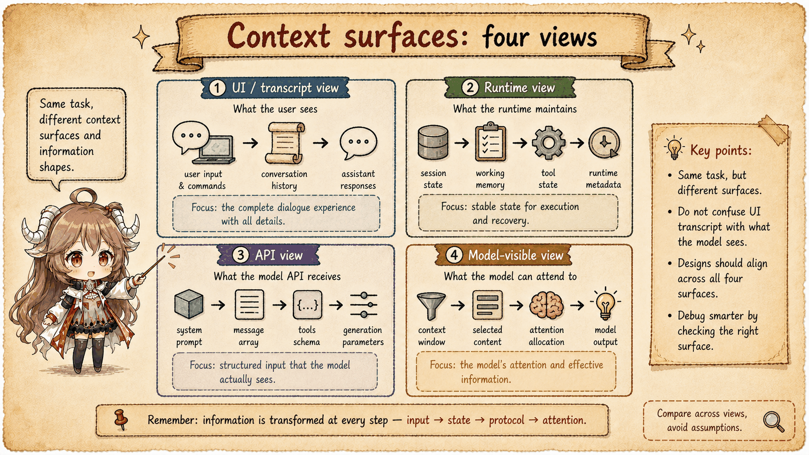
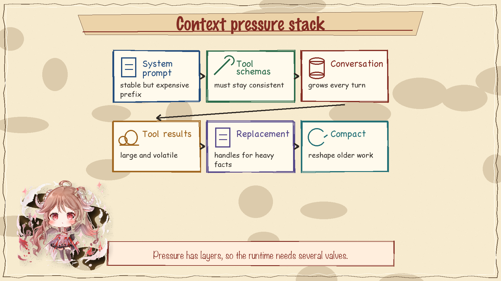
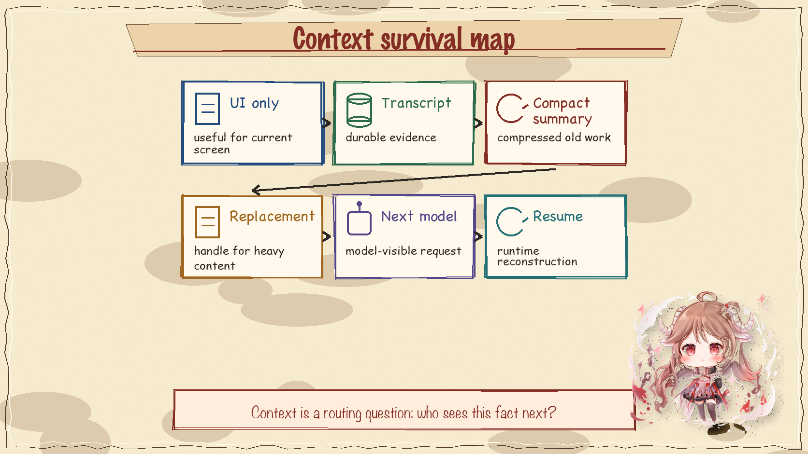

Part I followed one task through the runtime. Part II separated long-lived memory ledgers from transcript. This chapter starts after that split: the word context
is overloaded. In Claude Code it can mean project memory, user instructions, repository status, visible conversation messages, hidden runtime metadata, compact summaries, or API request blocks. Reading the code becomes easier once those surfaces are separated.
type ContextSurfaces = {
durableTranscript: Message[]
baseContext: SystemContext | UserMemory
modelVisibleView: ProviderMessage[]
pressureRelief: "replacement" | "collapse" | "compact"
recoveryBoundary: "compact summary" | "resume replay"
}1. Context starts before the chat history
The initial user and system context are built outside the model loop. User memory can come from CLAUDE.md files and related memory sources. System context captures facts such as the working directory, git state, and environment details. Later, appendSystemContext() and prependUserContext() place those facts into the provider request in different positions.

2. The model-visible view is rebuilt every turn
Inside queryLoop(), the runtime constructs the current API view. It does not blindly replay the whole transcript. It starts from the active compact boundary, considers tool-result budgets, feature gates, context collapse state, and microcompact behavior, then produces the messages that the provider will actually see.
That difference explains a common surprise: a message can be visible in local history, present in transcript storage, and still absent from the next API request. Context management is a projection problem.
3. Pressure is layered
Context pressure arrives from multiple directions. Tool results can be large. Repeated edits can create bulky replacement state. Long reasoning chains add assistant blocks. System and memory context consume prefix space before the conversation even begins. The runtime therefore has several valves, not one big summarizer.

4. Compact is a boundary, not just shorter text
A compact operation creates a new boundary in the conversation. From that point, later API requests can reason from a compacted representation instead of replaying every earlier message. This is why compact metadata matters to resume and recovery. The runtime needs to know not only the summary text, but also where the old context ended and which local state still belongs to the session.
The summary is also a model request, not an editorial afterthought. The compact path builds a no-tools summary request, installs the resulting summary as a recovery message, and can share the parent prompt-cache prefix for that side path. That is the bridge to the final chapter: summary quality matters, but request shape still decides how expensive the handoff becomes.

5. Microcompact handles local pressure
Microcompact is a smaller valve. It is used to control high-pressure parts of the prompt without forcing a full user-facing compact. That matters for performance because prompt cache depends on stable prefixes. A large, frequently changing tool result near the front of the request can spoil cache reuse, while a carefully placed replacement can keep the stable part stable. Cached microcompact makes the split explicit: keep local messages unchanged when possible, then ask the API layer to express the deletion as cache edits.
6. Recovery needs more than a summary
Resume code loads conversation messages, file history, content replacement state, compact-collapse metadata, and session metadata. That is a stronger claim than load the old transcript
. The runtime wants to rebuild a state that can continue making tool calls, checking permissions, and projecting a request correctly.

7. The invariant
Context management is the art of preserving the right facts at the right layer. Memory influences the prefix. Transcript preserves evidence. Compact rewrites the route back into old work. Microcompact reduces local pressure. Prompt cache rewards stable request shape. Once those layers are separate, the code stops looking like a pile of special cases.
Sources
The source-code claims in this article are based on the public mirror and the linked official documentation. Server-side behavior and private feature-gate policy are treated only as client-visible request shape.